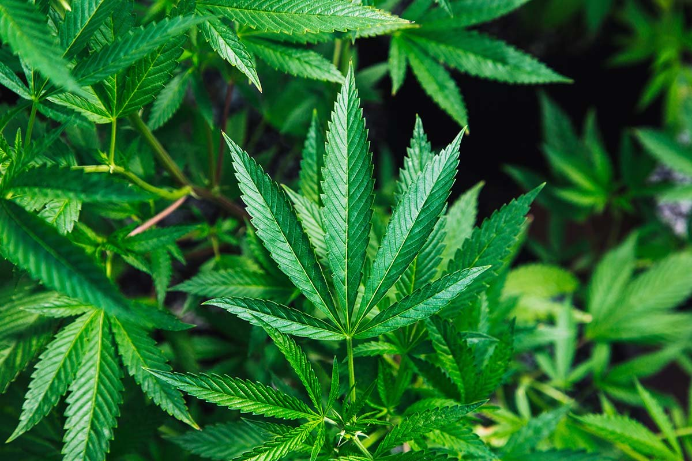

Hoe komen mensen aan drugs?
Sommige middelen zijn makkelijk verkrijgbaar. Zo mag iedereen boven de 18 jaar tabak en alcohol kopen en is cafeïne verkrijgbaar in de vorm van koffie, cola en energy drinks. Ook bestaan er in Nederland smartshops; winkels die kruiden en chemische stoffen verkopen die de stemming en waarneming van de gebruiker kunnen veranderen. De middelen die onder de Opiumwet vallen, zijn niet legaal te koop. Alleen cannabis mag onder strenge voorwaarden verkocht worden in coffeeshops. Voor medicinaal gebruik is het op recept verkrijgbaar in apotheken. In alle andere gevallen is verkoop van cannabis strafbaar.
Illegale drugs komen vaak via verschillende personen bij de uiteindelijke gebruiker terecht. Een gebruiker koopt het middel bij een handelaar (dealer), of krijgt of koopt het van vrienden of bekenden. Dit is allemaal strafbaar.